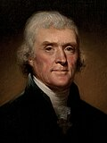
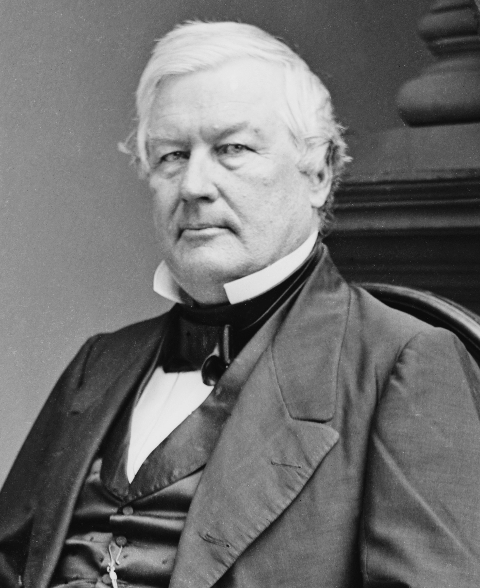

Unitarianism focused on reason, education, and moral improvement instead of emotional religious experiences.

Unitarians believed people should grow through logic and education rather than revival meetings.
